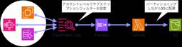
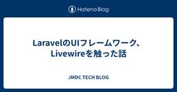
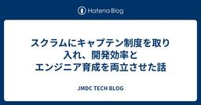

JMDC TECH BLOG
https://techblog.jmdc.co.jp/
JMDCのエンジニアブログです
フィード

CloudWatch Logsをパーティショニングしつつ雑にS3に保存する方法
JMDC TECH BLOG
こんにちは。株式会社JMDC データウェアハウス開発部の甲（きのえ）です。 今年、JMDCではアドベントカレンダーに参加しています。 qiita.com 本記事は、JMDC Advent Calendar 2025 6日目の記事です。 目次 はじめに 構成イメージ 手順 CloudFormationテンプレートの作成 ① CloudWatch Logs保存用S3バケットの作成 ② CloudWatch LogsをS3に保存するためのパーティショニング用Lambda関数を作成 ③ CloudWatch LogsをS3に配置するためのFirehose Delivery Streamを作成します ④…
17時間前
アイコンのデフォルトサイズを 1em から 1lh にする
JMDC TECH BLOG
今年、JMDCではアドベントカレンダーに参加しています。 qiita.com 本記事は、JMDC Advent Calendar 2025 5日目の記事です。 はじめに React のプロジェクトでアイコンを表示する場合、 SVG ファイルから React コンポーネントを生成することがしばしば行われます。弊社でも、いくつかのプロジェクトで SVGR を使用しています。 最近、 SVGR で生成するアイコンのデフォルトサイズを 1em から 1lh に変更したので、今日はその話を紹介します。 SVGR の --icon オプション SVGR は SVG ファイルを元に React コンポーネン…
2日前
AWSコストをもっと細かく見たいんです。～データエクスポート(CUR 2.0)活用の巻～
JMDC TECH BLOG
こんにちは！最近AWSコストが気になっている保険者レセプトグループの竹内です。 今年、JMDCではアドベントカレンダーに参加しています。 qiita.com 本記事は、JMDC Advent Calendar 2025 4日目の記事です。 皆さんはAWSのコスト管理、どうしていますか？ AWSにはCost Explorerという便利な可視化サービスがありますが、グラフで「S3の料金が上がっている」ことはわかっても、「じゃあ、どのS3バケットが一番コストを食っているの？」と、具体的なリソースIDまで特定できず、もどかしい思いをしたことはないでしょうか。 私自身、この問題に直面し「もっと詳細なコス…
3日前

LaravelのUIフレームワーク、Livewireを触った話
JMDC TECH BLOG
こんにちは。JMDCインシュアランス本部ソリューション部の宮田です。 今年、JMDCではアドベントカレンダーに参加しています。 qiita.com 本記事はJMDCアドベントカレンダー 3日目の記事になります。 はじめに Webアプリの新規開発で、LaravelのUIフレームワーク、Livewireを使う機会がありました。 Livewireはサーバー駆動型UIフレームワークです。 今まで私の経験ではクライアント駆動型UIフレームワークしか使ったことがありませんでした。 Livewireを使う上で、いいなと思った点やハマった点の共有と、自分の思考の癖でハマった際に気づきがあったので共有できればい…
4日前
RDB依存からの卒業。ELTシステムをETLへ刷新して見えた現実と振り返りの話 3
3
JMDC TECH BLOG
こんにちは。株式会社JMDC データウェアハウス開発部の垂水です。 今年、JMDCではアドベントカレンダーに参加しています。 qiita.com 本記事は、JMDC Advent Calendar 2025 2日目の記事です。 目次 1. はじめに 2. 刷新前後のシステム構成イメージ ■before ■after 3. 現行システムで抱えている課題と解決状況 4. ELTからETLに切り替わってどうだったか ■データ加工ロジックの基盤刷新(SQL -> pandas) 良かった点・工夫した点 ■データ保存先の刷新(RDB -> S3) コストとリソースのトレードオフ 5. おわりに 1. は…
5日前

スクラムにキャプテン制度を取り入れ、開発効率とエンジニア育成を両立させた話 8
JMDC TECH BLOG
こんにちは。プロダクト開発部でエンジニアリングマネージャーをやっている野田です。 今年、JMDCではアドベントカレンダーに参加しています。 qiita.com 本記事は、JMDC Advent Calendar 2025 1日目の記事です。 はじめに スクラムに属人的な要素を少量取り入れることで開発がやりやすくなり育成の面でも良い影響があったという話をします。 Pep Up（ペップアップ） ではスクラムによる開発を行っています。 基本的なプロセスとして、プロダクトバックログの上から順に手が空いた開発者がプロダクトバックログアイテムをセルフアサインし、開発を進めるスタイルをとっています。 このプ…
6日前

QAキックオフ資料を生成するPromptを作成し、開発とQAチームを効率化した話
JMDC TECH BLOG
Pep Up モバイルアプリチームのスクラムマスター兼エンジニアの @mrtry です。 近年のアジャイル開発の現場において、QAチームの業務負荷が高まっていることは、多くの組織で共通の課題となっています。 私たちの組織でも同様に、QAチームのリソース不足が顕在化していました。その原因を深く掘り下げていくと、開発チームからQAチームへの「情報共有」に一つの大きなボトルネックがあることが分かりました。 具体的には、QAキックオフ（テスト計画前の開発チームとQAチームのMTG）の際に開発チームから提供される資料の形式や粒度が、プロジェクトや担当者によってバラバラだったのです。 この「情報共有インタ…
12日前
アプリケーションの設定情報の管理にAppConfigを利用する
JMDC TECH BLOG
背景・概要 こんにちは、医療機関支援事業本部の森田です。 最近は急に寒くなりましたね。体調を崩さないように気をつけていきましょう。 さて、私が携わるプロジェクトではAWS Amplify Gen2とNext.jsを用いたサーバーレスアプリケーションを開発しています。このアプリケーションではマルチテナントでの運用を想定しており、テナントごとに異なる設定情報をどのように管理するかが課題でした。 Amplifyは環境変数の管理機能を提供しており、ビルド時にアプリケーションにこれらの値を安全に注入してくれます。しかし、この方法では値を変更するたびにAmplifyのビルド＆デプロイが必要になります。アー…
23日前
React RouterのRouteモジュールとディレクトリ設計
JMDC TECH BLOG
こんにちは。中澤です。 わたしは1年ほど前から本格的にフロントエンド開発について学び始め、先日社内向けにwebアプリケーションをリリースしました。 一区切りついたタイミングで、リリースされたアプリケーションを振り返りたいと思い、この記事では特にディレクトリ構成について焦点をあてています。 前提として、リリースされたアプリケーションの特徴は以下のようなものになります。 社内向けアプリケーション SPA React Router の framework mode を採用 実装したアプリケーションのディレクトリ構成を振り返る さっそく本アプリケーションのディレクトリ構成について振り返ってみます。 a…
1ヶ月前
AWSのVPCエンドポイント環境でDBeaverを活用！ドライバーの手動追加手順
JMDC TECH BLOG
セキュアな接続が必要な要件下でAWS Athena JDBC ドライバ3.xを使って、vpc Endopoint経由でAthenaに接続する手順を紹介
1ヶ月前
AWS初心者がオンプレ→AWSへの連携について触れてみた
JMDC TECH BLOG
初めに こんにちは！最近AWSを触り始めたデータレイクグループ・マスタチームの後藤です。 今回は最近行った、オンプレミス環境にあるデータをAWSのS3にアップロードする仕組みを構築した際の体験を共有します。 この記事は、私と同じようなAWS初心者の方に向けて書いています。 JMDCは「敷居が高そう」と言われることがあるそうなので、私のようなAWS初心者が発信することで、少しでもその敷居が下がれば嬉しいです。 システム構成の概要 今回は以下のような構成で、オンプレミスのデータをエージェント経由でAWSへ連携する構成です。 すでに同様の連携の仕組みが作成されており、エージェントは事前にインストール…
2ヶ月前
React Nativeエンジニア視点での「DroidKaigi 2025」参加レポート
JMDC TECH BLOG
こんにちは @mrtry です。 9/10から開催されたDroidKaigi2025に参加してきました。 普段はReact Nativeでアプリ開発をしていますが、弊チームのメンバーが全員Androidエンジニア出身ということもあり、気持ちは今もAndroidエンジニアです💪 このレポートでは、React Nativeエンジニア視点でのDroidKaigiを楽しんだ様子をレポートしていきます🥳 セッション 色々なセッションを見ましたが、React Nativeエンジニア的に語っておきたいものを抜粋してレポートします🙏 共有と分離 Compose Multiplatform “本番導入”の設計指…
3ヶ月前
Redshift Serverless のスナップショットを別アカウントに共有して冗長バックアップを作る
JMDC TECH BLOG
弊社では、保険者データベースの運用に Amazon Redshift Serverless を使用しています。貴重なデータを扱う上で、バックアップは必須であり、大規模災害やアカウント侵害といったリスクへの備えも欠かせません。 Redshift Serverlessには、データを定期的に保護する自動バックアップ機能が備わっています。また、Redshift Managed Storage (RMS)は、複数のアベイラビリティーゾーンにまたがってデータが分散されるため、99.99%の高い可用性を誇り、自然災害のリスクもある程度軽減されます。さらに、クロスリージョンへのバックアップも利用でき、遠隔地に…
3ヶ月前
NotebookLMの業務活用事例と見えてきた課題
JMDC TECH BLOG
こんにちは。インシュアランス本部の由利です。 今回は、社内や部内で活用されているNotebookLMの使い方について紹介します。 NotebookLMとは NotebookLMは、Googleが提供しているドキュメントベースのAIアシスタントです。 様々な形式の資料（ドキュメント、PDF、Webサイトなど）を「ソース」としてアップロードすると、その内容を情報源としてAIが質問に答えたり、要約やアイデア出しをしたりしてくれます。 インターネット上の情報ではなく、手元の資料に基づいて回答を生成する点が大きな特徴です。 support.google.com 例1：社内問い合わせ対応の省力化 社内の就…
3ヶ月前
Rails＋ViteでHMRを導入、さくさくフロント開発する！得られた知見の共有
JMDC TECH BLOG
医療機関基盤グループでエンジニアをしている堀です。 私が携わるシステムでRailsのバージョンのEOLのためにバージョンアップする必要性がありました。その際にフロントエンド開発用に導入していたShakapackerがすんなりとアップデート対応できず、また使い勝手が悪かったこともありViteに移行することにしました。移行に際してHMRを実現するのに少々手こずりましたので、そこで得れた知見の共有をさせてください。 なおDockerやRailsといったスキルについてある程度理解されてる方を対象に書いています。ご了承ください。
3ヶ月前
開発生産性Conference 2025に参加してきました！
JMDC TECH BLOG
こんにちは！JMDCでPep Upの開発をしている西川 (@wazu_3) です！ 2025年7月3日・4日に開催された「開発生産性Conference 2025」に両日参加してきました！ dev-productivity-con.findy-code.io 特に印象に残ったセッションを所感を交えながら振り返っていきます！ （だいぶ期間が空いてしまいましたが...） 印象に残ったセッション MUITにおける開発プロセスモダナイズと開発生産性可視化の取り組み speakerdeck.com このセッションでは、新しいツールやプロセスを組織に導入し、定着させるための実践的なアプローチが紹介されまし…
4ヶ月前
C#のプロダクトをGoにリプレイスした話
JMDC TECH BLOG
みなさん、こんにちは！プロダクト開発部の吉川（@yoshiyu0922）です。 現在、JMDCが保有している医療ビッグデータを活用して生活者や医療に新しい価値を提供するプロダクト開発チームのバックエンドを担当しております。 今回は、C# で開発されたプロダクトを Go にリプレイスをした話をします。 リプレイスをしたプロダクトについて まずは、Go にリプレイスしたプロダクト『JMDC Data Mart』（以下、JDM）についてご紹介します。JDMは製薬企業向けにヘルスビッグデータを活用した分析サービスを提供するプロダクトです。膨大なヘルスビッグデータを基盤に、マーケティング業務や医薬品の安…
6ヶ月前
カレンダーの日付はどう読まれるべきか問題
JMDC TECH BLOG
こんにちは！ 株式会社JMDCでヘルスケアプラットフォームサービス【Pep Up】 のフロントエンドエンジニアをしている新保です。 突然ですがこのボタンをご覧ください。 「一括入力する」と書かれていますね。しかしこのボタン、実はある技術を使うと「送信」と読まれてしまいます。 どういうことか。コードを見てみましょう。 <button aria-label="送信">一括入力する</button> aria-label という属性が付与されています。これはスクリーンリーダーなどの支援技術に対して、その要素が読み上げられる場合などの名前 (accessible name) を指定するための属性です。…
6ヶ月前
TSKaigi 2025 初参加レポート！
JMDC TECH BLOG
こんにちは！フロントエンドエンジニアとして Pep Up の開発に携わっております、末信です。 5/23、24 で開催された TSKaigi 2025 に参加してきたので、レポートしたいと思います🎉 2025.tskaigi.org TSKaigi は去年もオンラインで参加していましたが、今年はせっかく関東に住んでいるということもあり、さらなるモチベーションアップにも繋げたいという気持ちで業務の一環として参加させていただきました。 行ってみた感想 技術カンファレンス自体、初めての現地参加でドキドキしていましたが、本当に参加してよかったです！ 特に、 技術カンファレンスにまだ現地には行ったことな…
6ヶ月前
Amazon Redshift Performance Tuning参加レビュー
JMDC TECH BLOG
こんにちは。開発本部 データウェアハウス開発部 データレイクグループの竹内です。 4月初旬にAmazon Web Service（以下、AWS）のRedshiftパフォーマンスチューニングワークショップに参加しました。 本ブログでは、ワークショップの内容についてご紹介いたします。 読者の皆様に、ワークショップの様子を少しでもお伝えできれば幸いです。 1. ワークショップ概要 2. 読んでほしい方 3. ワークショップの内容 3-1. Redshiftの仕組みを理解する 3-2. ボトルネック分析の方法について学ぶ 3-3. いよいよハンズオン 4. 今回の学び・気づき 5. 実務での次のステッ…
7ヶ月前
なぜこの機能を作るのか？現場起点でたどり着いた答え
JMDC TECH BLOG
はじめに こんにちは！プロダクトビジネス本部 プロダクト企画部 WORK企画G 森山です。 私たちは、日本でも最大級の医療データを保有するヘルステック企業で、個人向けPHRサービス「Pep Up」や健康診断・レセプトデータを活用したサービスを展開しています。 stories.jmdc.co.jp 現在は新たに、企業向けの産業保健領域にも挑戦しており、従業員の健康を支えるプロダクトの開発を進めています。 私自身はその開発チームでリードエンジニアを務め、プロダクトマネージャーや営業と連携しながら、プロダクトのあるべき姿を考えながら開発をしています。 lp.pepup.work この領域では「とりあ…
7ヶ月前
Laravel11でJWTトークンを使ったユーザー認証で苦戦した話
JMDC TECH BLOG
こんにちは。JMDCインシュアランス本部ソリューション部の檜山です。 最近、初めてLaravel11でJWTトークン認証を実装しました。 実装にあたり私の知見不足により苦戦したことがいくつかありましたので、他山の石として参考になれば幸いです。 環境 Laravel11 使用ライブラリ GitHub - tymondesigns/jwt-auth: 🔐 JSON Web Token Authentication for Laravel & Lumengithub.com 苦戦したところ① JWT自体にはリフレッシュトークンの標準的な仕組みは無い リフレッシュトークンとは、クライアント-サーバ間で…
7ヶ月前
Rails7で標準となったimportmapとは何者か
JMDC TECH BLOG
開発本部 データウェアハウス開発部 医療機関基盤グループでシステム開発をしている堀です。 Rails7で標準となったimportmapですが、恥ずかしながら今更存在を知って自分のJavaScript（以下JSと呼称）関連の知識が古くなってることに気付かされました。おかげで知識のアップデートする機会にもなったので、知識の整理の意味も含めて知見を共有させていただきます。
8ヶ月前
Oracleインライン外部表を活用して外部データソースと既存システムのデータの比較検証環境を構築した話
JMDC TECH BLOG
こんにちは データウェアハウス開発部 データレイクグループの安海です。 データレイクグループにて 医療系のマスタデータをメンテナンスするシステムを担当しています。 多種多様なマスタを取り扱っており、 外部からのメンテナンスの元となるファイルを取込 JMDCの業務に必要な形にメンテナンス メンテナンスしたマスタを必要なシステム、部署に配信 といったことを行っています。 少し古いですが、データレイクグループの雰囲気がわかりますので興味がある方は下記記事も読んでみてください blog.jmdc.co.jp techblog.jmdc.co.jp 今回はOracleDBのインライン外部表機能を使用して…
8ヶ月前
dbtをデータ基盤のデータ品質維持に活用できないかを試してみた
JMDC TECH BLOG
はじめに データウェアハウス開発部の高野です。 オンプレミスの電子カルテデータ基盤のAWS移行のプロジェクトに参画しておりますが、開発も終盤となり、データ基盤を運用するフェーズも考えるタイミングになってきました。 運用する上で重要な事の1つとしてデータ品質の維持があります。製薬企業様、医療機器メーカー様を中心に幅広くご活用いただいているデータであるため、最重要と言っても良いものです。 そのデータ品質の維持に、近年、多くの企業様でも活用されているdbtを電子カルテデータ基盤独特の要件がある中、活用できないかを試してみました。 dbtとは dbtとはSQLによるデータ変換や、データ品質チェック、ド…
8ヶ月前
プライベート環境のFargateにサードパーティ製EDRを導入してみた
JMDC TECH BLOG
初めまして。株式会社JMDC データウェアハウス開発部 保険者基盤Gの垂水です。 EDR(Endpoint Detection and Response)というサイバー攻撃対策をFargateへ導入するにあたり、詰まったポイントがあり困ったため手順に解説を入れて紹介します。 尚、情報を隠している箇所や意図的に曖昧な表現にしている箇所が多数あります。 はじめに 構成図 導入手順 ネットワーク編 (1). CrowdStrikeサポートに連絡し、自社のAWSアカウントIDをホワイトリストに追加してもらう (2). 自社AWSアカウントのリージョンAにVPCとVPCエンドポイントを作成する (3).…
8ヶ月前
自動化に頼りすぎて失敗した話
JMDC TECH BLOG
S3格納済みのcsvからAthenaで分析可能にするためにノーコードで要件を実現できないかチャレンジした結果、あと一歩のところでうまくいかなかった失敗談を紹介
8ヶ月前
.NET Community Toolkitを使ったWPFアプリを作成してみた
JMDC TECH BLOG
こんにちは。株式会社JMDC インシュアランス本部ソリューション部の松本です。 今年、JMDCではアドベントカレンダーに参加しています。 qiita.com 本記事は、JMDC Advent Calendar 2024 25日目の記事です。 はじめに 作成したツールについて .NET Community Toolkitとは ツールの自動生成を行ってくれる 感想、まとめ はじめに 私は2024年の１月にJMDCに入社し、インシュアランス本部ソリューション部に在籍しています。 担当しているシステムの機能の一つにマイナポータルから特定健診情報、薬剤情報、医療費通知情報を取得し、他のシステムのインプッ…
1年前
Tableauを用いた分析サービスのアクセス件数を上げるために実施したこと
JMDC TECH BLOG
今年、JMDCではアドベントカレンダーに参加しています。 qiita.com 本記事は、JMDC Advent Calendar 2024 24日目の記事です。 こんにちは、医療機関支援本部で企画をしている川島です。グループ会社のメディカルデータベースが病院薬剤部向けに提供しているDPCデータ分析ツール（MC=Valuation）を医療機関支援本部として企画を含め支援しています。 １．サービスについて ２．当時の課題 ３．実施したこと ▼現状を分析した ▼顧客へのヒアリングを実施した ▼開発・機能改修の頻度を上げた ▼Webセミナーを定期的に行った 顧客とのコミュニケーションが取れる状況を作っ…
1年前
AWS分散負荷テスト使ってみた
JMDC TECH BLOG
こんにちは。JMDCインシュアランス本部ソリューション部の檜山です。 今年、JMDCではアドベントカレンダーに参加しています。 qiita.com 本記事は、JMDC Advent Calendar 2024 23日目の記事です。 はじめに 現在、私はiOSおよびAndroid向けアプリのバックエンド開発を担当しています。 モバイルアプリやWebサービスを問わず、性能試験は欠かせないプロセスです。例えば、ECサイトではページの表示速度が売上と相関関係があることが知られており、ページ表示速度はユーザー体験に直結する重要な要素となっています。 しかし、開発業務ではアプリ機能要件の試験が優先され、非…
1年前